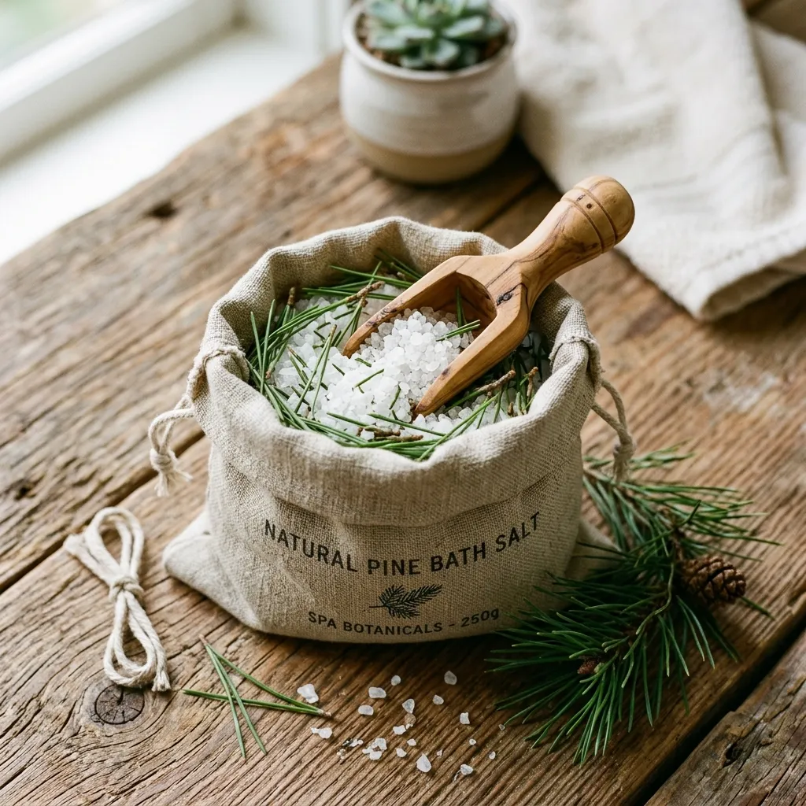

Thermal Contrast Soaking & Botanical Hydrotherapy
Evidence-based cold-water plunge and hot cedar soaking recovery cycles designed for alpine endurance athletes.
Hydrotherapy Guide: Thermal Contrast Recovery
This rigorous protocol dictates a rapid cycle of vasodilation and vasoconstriction, forcing the cardiovascular system to pump oxygen-rich blood deeply into damaged muscle tissues, accelerating physical recovery.
Hot Cedar Soaking
Submerge in the 40°C cedar tub for 15 minutes. The intense heat triggers massive vasodilation, opening blood vessels and allowing trapped lactic acid to begin flushing from fatigued muscle groups.
Cold Ocean or Ice Plunge
Immediately transition into an 8°C cold plunge for 3 minutes. The shocking cold induces violent vasoconstriction, rapidly squeezing the dilated vessels and forcing the metabolic waste out of the extremities.
Re-Warming Rest
Exit the cold plunge and rest in ambient air for 10 minutes. Allow the body's cardiovascular system to naturally equalize before repeating the cycle.
Hydration & Mineral Salts
Following three complete thermal cycles, conclude the session with deep hydration and a final extended soak utilizing our Kootenay Pine-Salt mineral infusion to restore dermal magnesium levels.
The fundamental mechanism behind thermal contrast soaking lies in the mechanical pumping action forced upon the cardiovascular system. When an athlete subjects their body to extreme heat followed instantly by extreme cold, the blood vessels act like a bellows, rapidly expanding and contracting. This aggressive flushing action clears out the chemical byproducts of intense muscular exertion much faster than passive rest ever could, drastically reducing delayed onset muscle soreness (DOMS).
Beyond the immediate muscular relief, this protocol is revered for its profound impact on the central nervous system. The intense sensory shift from burning hot cedar water to freezing ice forces the brain to dump cortisol and adrenaline, effectively resetting a stressed nervous system. Athletes report massive improvements in deep REM sleep quality when this routine is completed in the evening, ensuring that the body enters a true regenerative state overnight.
Respiratory & Neurological Benefits of Cedar Steam
The scientific benefits of inhaling natural cedar wood resins during a hot soak go far beyond pleasant aromatics.
Cortisol Reduction
Clinical studies demonstrate that inhaling cedar phytoncides can reduce serum cortisol levels by up to 20%, directly lowering systemic physiological stress.
Vagus Nerve Activation
The warm, dense aromatic steam stimulates the vagus nerve, immediately shifting the autonomic nervous system from sympathetic (fight or flight) to parasympathetic (rest and digest).
Natural Air Sanitization
Thujone compounds released by the cedar naturally sanitize the air immediately above the water line, clearing respiratory pathways and acting as a mild natural expectorant.
The therapeutic use of forest aerosols is deeply rooted in the Japanese science of Shinrin-yoku, or forest bathing. Researchers have long documented that trees, particularly dense conifers like western red cedar, emit active organic compounds called phytoncides to protect themselves from insects and rot. When humans inhale these specific aerosols, our bodies respond by increasing the production of natural killer (NK) cells, providing a measurable boost to the immune system.
By filling a raw cedar tub with 40°C water, we are essentially creating a hyper-concentrated phytoncide reactor. The heat accelerates the release of these resins from the timber, trapping them in the steam rising directly into the bather's respiratory zone. This means that a thirty-minute soak in a Cedar & Salt tub delivers the neurological and immunological benefits of hours spent hiking through an old-growth alpine forest, all from the stationary comfort of your own backcountry deck.
Soaking Tub Care & Operational FAQ
Expert answers on water treatment, freezing conditions, and timber longevity.
How do I keep water clean in a wooden tub without harsh chlorine bleach?
We recommend using food-grade hydrogen peroxide (H2O2) combined with our natural salt infusions. This gentle oxidizer destroys bacteria without degrading the wood's cellular structure or emitting harsh chemical odors.
Can a cedar tub remain outdoors filled with water during severe Canadian winter freezes?
Yes, provided you maintain a baseline temperature. The 40mm thick cedar provides excellent insulation. If leaving the tub unused for weeks in sub-zero temperatures, it must be drained completely to prevent ice expansion from breaking the staves.
How often do the stainless steel hoops need tightening?
Almost never after the initial curing phase. Once the wood has fully swelled during the first 48 hours of saturation and the cinch bolts are given a final quarter-turn, the tension will hold permanently.
Does cedar wood rot or grow mold if left damp for long periods?
Old-growth western red cedar contains massive amounts of natural thujaplicins, making it incredibly resistant to rot and fungus. As long as the tub is exposed to natural air circulation when empty, it will not mold.
What is the expected lifespan of an old-growth western red cedar soaking tub?
When properly maintained without the use of destructive chlorines, a hand-coopered cedar tub from our guild will easily last twenty to thirty years in a harsh outdoor environment.
Practitioner & Lodge Reports
Over 350 Hand-Coopered Cedar Tubs Installed Across North America.
"The aggressive vasodilation provided by the 40-degree cedar soak, followed instantly by our river cold plunge, flushes lactic acid faster than any mechanical massage tool I own. My athletes are recovering from ultra-marathons in half the standard clinical timeframe."
"We replaced our failing plastic spas with three six-foot Selkirk tubs, and the guest response has been phenomenal. Even buried under four feet of backcountry snow, the cedar retains heat beautifully, and the stainless hoops haven't budged an inch."
Book a Cooperage Consultation
Ready to commission a custom cedar tub? We provide complimentary CAD layout fittings for complex deck or backcountry installations.